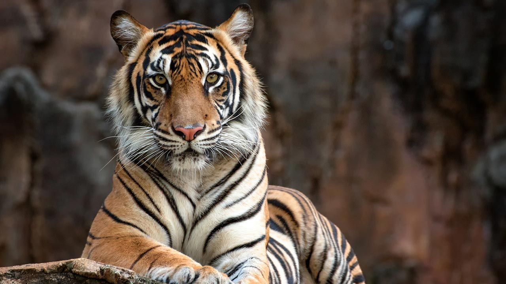
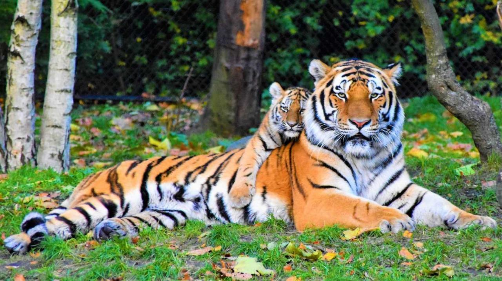
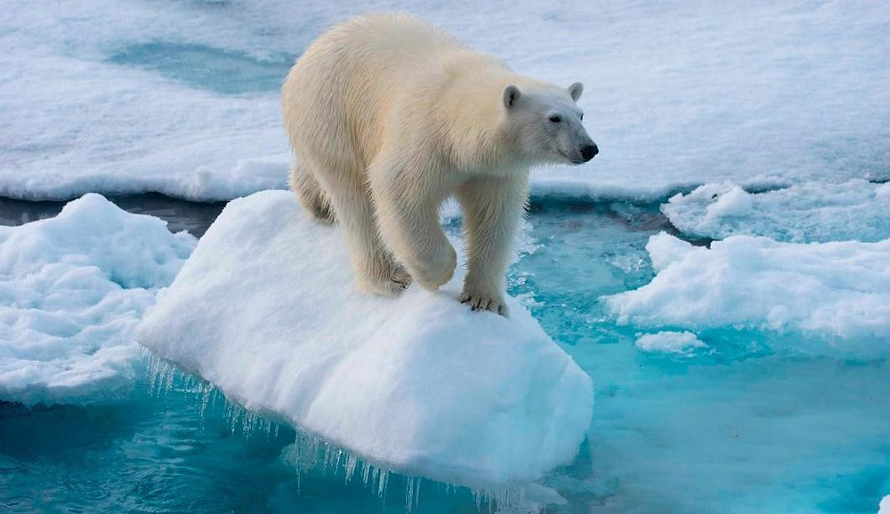

Lamentablemente, hoy en día son muchas las especies en peligro de extinción. Muchas de ellas, debido a la acción del hombre y el cambio climático global, lo que resulta igualmente un efecto indirecto de las actividades del ser humano. Algunas de estas especies en peligro ya están condenadas a desaparecer de aquí a unos años y, aunque hay muchas organizaciones que trabajan por preservarlas, día a día siguen sufriendo.
En esta lista de ExpertoAnimal, te mostramos los animales en peligro de extinción, te explicamos cómo proteger animales en peligro de extinguirse y te ofrecemos una entrevista con una abogada especializada en la protección de los animales y el medio ambiente. Así que, si quieres conocer qué animales están en peligro de extinción, en situación crítica, y qué puedes hacer para ayudarles, ¡sigue leyendo!
El oso polar está en peligro de extinción, ya hace tiempo que los expertos vienen alertando de la problemática a la que se enfrenta a esta especie, pero no fue hasta 2008 cuando Estados Unidos decidió incluir al oso polar u oso blanco en su lista de animales en peligro de extinción. Según fuentes del país norteamericano, el cambio climático está destruyendo su hábitat en el Océano Ártico y con ello reduciendo el número de especies en nuestro planeta a pasos agigantados.
Científicos del Gobierno de Estados Unidos piensan que dentro de 50 años se extinguirán dos terceras partes de la actual población de osos polares. La decisión se esperaba desde enero, pero el Departamento de Interior dijo que necesitaba más tiempo para estudiar algunas propuestas de miembros del Congreso y de los ecologistas. A todo el mundo no le ha parecido correcta esta medida. Varios expertos en políticas medioambientales del Heartland Institute, han tachado esta decisión de "alarmista" porque "aunque las temperaturas han aumentado en los últimos 10.000 años los osos polares no han desaparecido". Los osos polares miden entre 2 y 3 metros de longitud y pueden llegar a pesar hasta 700 kilos dependiendo de su edad. Según los datos de WWF, solo quedan unos 20.000 osos polares en el mundo, de modo que convierte a los osos polares en una especie que puede desaparecer en el próximo siglo si continúa la tendencia actual de calentamiento en el Ártico. La mayoría de estos ejemplares viven al oeste de Alaska, el norte de Alaska, Groenlandia, Canadá y Siberia, aunque no se descarta que también tengan presencia en Islandia. A pesar de que puede parecer que están lejos de la contaminación de las ciudades y la civilización, se encuentran en claro peligro de desaparecer. Una triste noticia por todos los que amamos estos y otros tantos animales que no hacen otra cosa que intentar ser felices allá donde se encuentran. La última reevaluación mundial de los osos blancos realizada por la Unión Internacional para la Conservación de la Naturaleza (UICN) ha incluido a esta especie en la categoría de "vulnerables y con población decreciente" en su Lista Roja de especies amenazadas. La nueva reevaluación tuvo en cuenta los cambios en la capa de hielos marinos, ya que el deshielo es la principal amenaza para su conservación y los resultados no han sido optimistas. Muy al contrario, se concluye que es muy probable que la población global de osos polares disminuya en más de un tercio en los próximos 35 a 40 años.
El rinoceronte de Java, Rhinoceros sondaicus se encuentra gravemente amenazado, quedando aproximadamente 67 ejemplares que sobreviven en Java (Indonesia), en el Parque Nacional Ujung Kulon. La población está muy fragmentada y sigue disminuyendo. Son animales solitarios que vivían en las profundidades de la selva y, de hecho, ha sido una especie poco estudiada al ser difícil su localización. Mucha de la información que se tiene de esta especie de rinoceronte se debe al estudio de sus heces, fotografías o ejemplares que se encuentran en zoológicos y en museos.
Según la lista roja del IUCN el rinoceronte de Java se encuentra en peligro crítico de extinción (CR) desde 1996, es decir, que el riesgo de que la especie se extinga es muy alto. Los varios los motivos por los que esta especie se encuentra en esta situación, aunque la causa principal viene dada por la gran demanda de su cuerno. A continuación, se mostrarán las diferentes causas de por qué el rinoceronte de Java está en peligro de extinción:
Esta es otra de las especies animales en mayor peligro de extinción en Asia y en el mundo. Su supervivencia está cada vez más amenazada, sufriendo más en los últimos años. De nuevo la caza es el elemento principal que ha impulsado a ello, aunque también influye la deforestación, una consecuencia indirecta de la acción del ser humano. El tigre de Java y el de Bali ya se extinguieron y, a pesar de que su carne no se usa habitualmente para la nutrición, los tigres se cazan para aprovechar su piel, que se paga a altos precios en el mercado. Dos de las subclases más amenazadas son los tigres de Bengala y los tigres de Amoy o Xiamen.
El tigre es un animal salvaje y es el felino más grande del mundo, capaz de alcanzar los 300 Kg de peso. La actividad del ser humano está acabando con su especie, actualmente se calcula que quedan 3.200 tigres en estado salvaje en todo el mundo, algo que los sitúa al borde de la extinción. Mientras tanto, en cautividad la población también se ha reducido según los últimos datos publicados por WWF (World Wildlife Fund). Si continúa la caza, el tigre desaparecerá en 15 o 20 años, por eso en el siguiente artículo de EcologíaVerde queremos hablarte sobre los tigres en peligro de extinción.
Si te preguntabas qué animales están en peligro de extinción, puede que te extrañe saber que hay quienes consideran que este animal, el canguro, está ya en riesgo. El canguro, de la familia Macropodidae, es un animal australiano del cuál se come su carne y también se exporta a otros lugares para su consumo, así como objetivo de actividades turísticas, de la caza furtiva, etcétera. Además, a pesar de su caza, este marsupial sufre sobre todo los efectos del calentamiento global. Podría desaparecer en unos años, según expertos. Si las temperaturas siguiesen aumentando en los próximos años, los canguros podrían estar condenados a desaparecer en unos años, pues su población va descendiendo poco a poco por lo comentado y por el aumento de las temperaturas a mayor ritmo podría empeorar drásticamente en poco tiempo. No obstante, actualmente todavía no se ha llegado a categorizar como especie en riesgo, aunque está siendo muy monitorizada por lo comentado.
La mariposa monarca (Danaus plexippus plexippus) es un invertebrado de la familia Nymphalidae que se caracteriza, entre otras cosas, por realizar migraciones intergeneracionales desde Estados Unidos y Canadá a México cada año. Sin embargo, estos pequeños insectos de atractivos colores están en peligro de extinción, igual que lo están muchas otras especies en la actualidad. La mariposa monarca se encuentra catalogada como "en peligro de extinción" por la IUCN (Unión Internacional para la Conservación de la Naturaleza y los Recursos Naturales). una de las causas que explican por qué está en peligro de extinción la mariposa monarca es por el cambio climático y pérdida de hábitat.
El cambio climático podría ser el responsable de la modificación de los patrones migratorios de la mariposa monarca, algo que se debe a los cambios en las condiciones climáticas que este acarrea. Tanto el descenso de las temperaturas en invierno como su aumento en verano podría tener efectos letales y provocar que los hábitats aptos para esta especie se desplazasen hacia latitudes mayores. En condiciones anómalas de sequía puede darse una mayor tasa de mortandad entre las mariposas adultas en la zona de reproducción (Estados Unidos y Canadá), así como una menor cantidad de alimento disponible para las orugas, lo que supondría un menor número de individuos migrantes. Durante el año 2013, en México se registró el menor número de mariposas monarca invernantes en veinte años. Actualmente se registran unos 35 millones de mariposas que ocupan, aproximadamente, 1.7 hectáreas (muy pocas en comparación con las 45 hectáreas que ocupaban en 1996). El clima cambiante podría haber tenido una repercusión muy negativa; durante la primavera de 2012, en Estados Unidos se registraron unas temperaturas notablemente mayores a la media para esa época, lo cual se tradujo en una migración temprana de las mariposas monarca hacia ambientes más frescos, mucho antes de que las plantas de algodoncillo (alimento esencial para las orugas) hubiesen aflorado. Por otra parte, en 2013 hubo un clima más frío de lo normal, lo cual supuso un obstáculo en su migración hacia el norte. Los cambios climáticos pueden conllevar, a su vez, la expansión de parásitos, infecciones bacterianas y enfermedades que afecten a las poblaciones de mariposa monarca.
El pingüino de Humboldt (Spheniscus humboldti) es una de las dieciocho especies de pingüino que existen en la actualidad. Si te preguntas el porqué de su curioso nombre, se debe a que en la zona en la que habita se encuentra una corriente oceánica llamada “corriente de Humboldt”.
Según la Lista Roja de la Unión Internacional para la Conservación de la Naturaleza (UICN), la categoría actual en la que se encuentra el pingüino de Humboldt es en estado de vulnerabilidad, ya que su población reproductiva mundial se encuentra en descenso. Aunque el pingüino de Humboldt no se encuentra estrictamente en peligro de extinción, debemos tener cuidado porque la categoría a la que pertenece (estado vulnerable) está tan solo un escalón por delante de la peligro de extinción. De hecho, actualmente quedan unos 23.800 individuos de pingüinos de Humboldt.
Una vez entendida la importancia de conservar los animales en peligro de extinción, debemos llevar a cabo medidas para conseguirlo. Aunque parezca que el poder para salvaguardar las especies solo está en manos de los gobiernos, altos cargos o empresas implicadas, todos podemos formar parte del cambio y de la ayuda. Cada acción cuenta, y la suma de todas las acciones individuales puede ser la clave para recuperar las especies en peligro. Toma nota de cómo ayudar a los animales en peligro de extinción.
La contaminación del medio ambiente es una de las causas más importantes de la extinción de animales. Al contaminar, ensuciamos y dañamos el hábitat natural de las especies y favorecemos el calentamiento global, alterando las condiciones climáticas naturales del área donde viven las especies. Por eso, debemos ser personas limpias y respetuosas con el medio ambiente. Reciclar está en nuestras manos, al igual que optar por alternativas menos contaminantes, como usar transporte público.
La destrucción del hábitat es otro de los mayores peligros, llegando a afectar al 85% de las especies amenazadas, según la UICN. También puedes ayudar a luchar contra este problema que impide que las especies coexistan en sus áreas naturales, provocándoles la extinción, restaurando zonas afectadas: planta árboles originarios de la zona; limpia áreas contaminadas, como playas, etc.
La caza sin licencia o practicada en lugares prohibidos debe ser evitada y denunciada, igual que la tenencia o venta de animales exóticos como animales de compañía. Di NO a las “mascotas” no domésticas y a los productos fabricados con animales en peligro de extinción. Adquiere productos con responsabilidad, sin ser fabricados con piezas provenientes de estos animales, y evita que el tráfico ilegal de especies se lucre y continúe creciendo. Asimismo, ayuda a erradicar estos graves problemas que tanto daño hacen a las especies denunciando los casos que conozcas.
Evita arrojar cristales u otros productos que puedan crear incendios en la naturaleza y avisa a los bomberos y policía nacional si eres consciente de un incendio o de algo o alguien que pueda provocarlo.
Sigue siempre las indicaciones que se muestren en los paseos naturales, reservas naturales y áreas protegidas. De igual modo, haz respetar esas normas por tus acompañantes y no dudes en llamar la atención del que no lo haga.
Conviértete de forma proactiva en parte del cambio y ayuda a propagar informaciones como estas para que todo el mundo pueda entender la importancia de seguir estos pasos. Recuerda que entre todos podemos conseguir cambiar la situación.
También puedes ayudar de manera proactiva uniéndote a una ONG u organización sin ánimo de lucro que luche por el bienestar de las especies y los ecosistemas, así como a una protectora o refugio de animales.
Algunas organizaciones en las que somos socios y trabajamos en sus programas de voluntariado, son:
Si te gustaria ser voluntario en alguna de estas organizaciones te invitamos a que registres tus datos para que te contactemos con mas información de la organización de tu preferencia!
| # | Animal | Especie | Localización | Año de extinción |
|---|---|---|---|---|
| 1 | Dodo | Ave | Isla Mauricio | 1700 |
| 2 | Cuaga | Esquino | Sudáfrica | 1880 |
| 3 | Colobo rojo de Miss Waldron | Mono | Ghana y Costa de Marfil | 2000 |
| 4 | Foca monje del Caribe | Foca | Jamaica y Nicaragua | 1952 |
| 5 | Delfín del río Yangtsé | Delfín | China | 2006 |